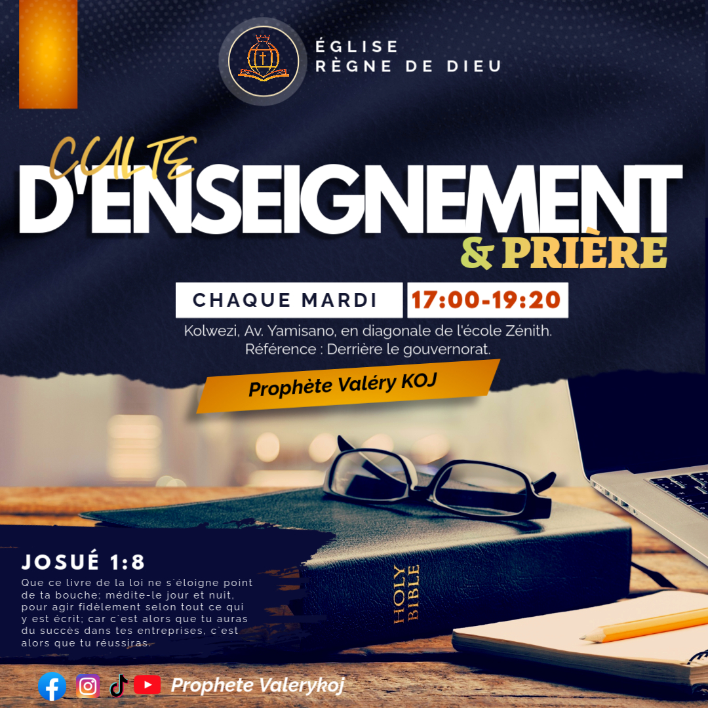
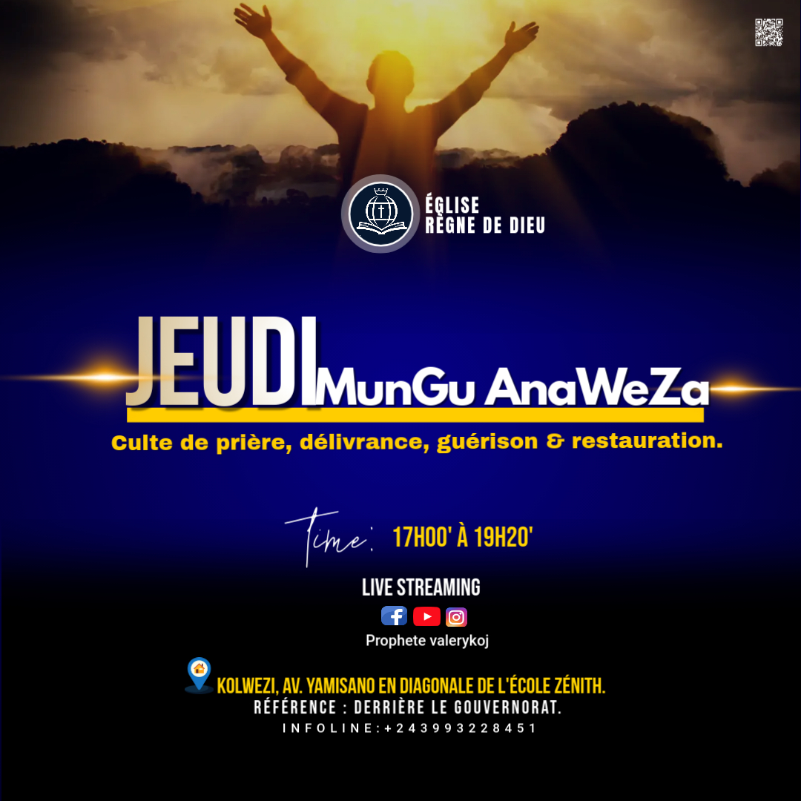
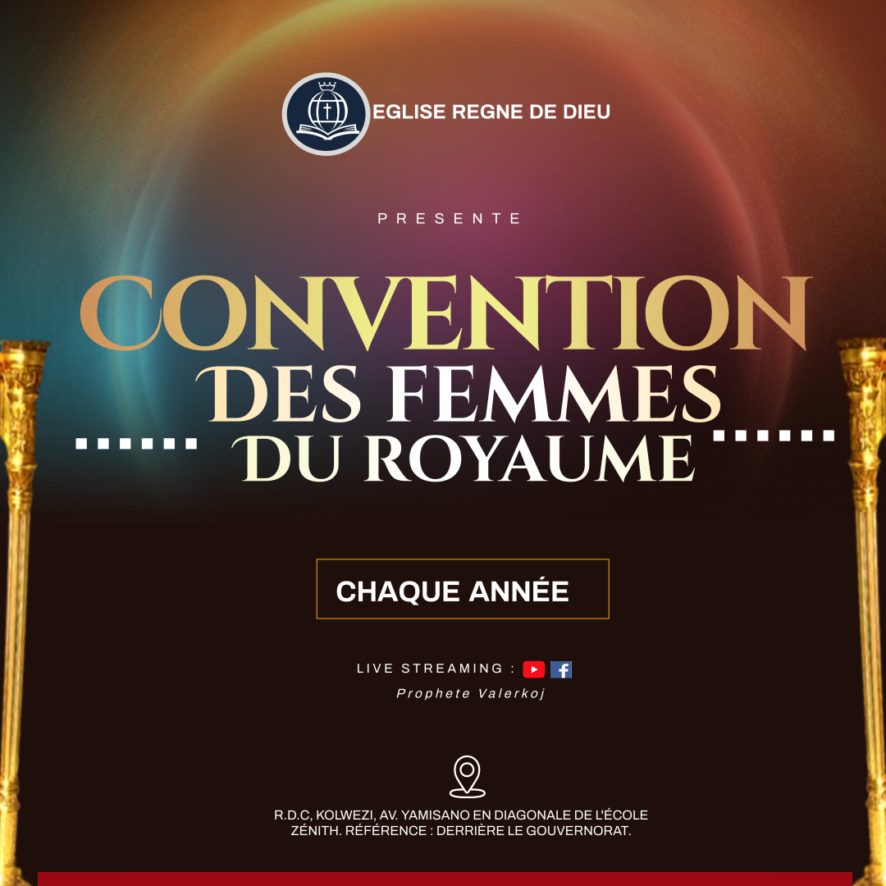
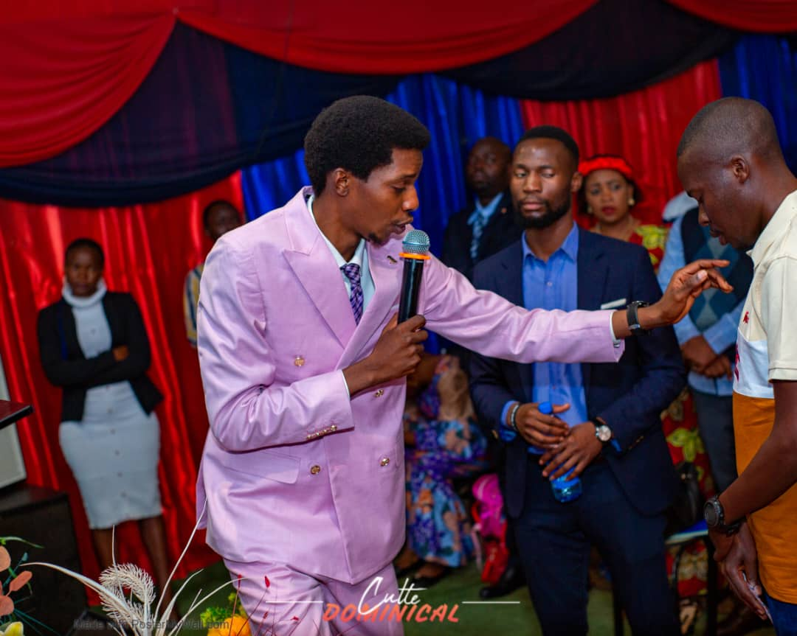

La vie de la communauté
Des instants de foi et de partage
Revivez en images les cultes, rencontres et événements qui rythment la vie de notre communauté.






Par respect pour la vie privée, toute nouvelle photo d’un membre est publiée avec son accord.